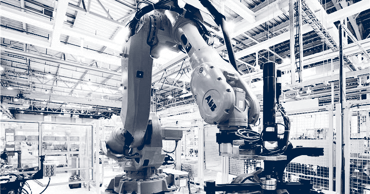

11/12/2028
The jobless rate across the E.U. rose to 87% claims a new report by the department of economic development. The prime minister of the EU made brief comments to the press just after the release, stating ''this shows the innovation of the European people, who now have the highest standard of living of any nation in the history of nations, without the requirement of servitude to any corporate or business entity. We are in a new era of abundance without the requirement of work.''
The EU has been phasing in the Universal Basic Income system since its implementation 5 years ago, when mass unemployment spiked to a crisis level at 46%. Since the implementation of the gradually increasing UBI, the rollout of automation of most occupations has undergone hyper-acceleration as companies adapt to a population that no longer needs to work for the low wages that have been traditional to the pre-UBI economy.
The prime minister also praised the development of resource based systems which now maintain control of nearly 1/3rd of the agriculture and food/beverage industry, an industry which represents 15% of the European economy.
''The resource based economy project is an incredible success. Our robotics engineers and horticulturists are developing a system where crops are grown, harvested and processed with the requirement of only modest volunteer human interference and this system is showing its utility; giving more and more Europeans a diversity of nutritious food, without payment, allowing people to save their incomes. We look forward to expanding this program beyond agriculture and food and in to the clothing and infrastructure sectors next. It should be clear to everyone that we are rapidly moving to a period where even a monetary income will no longer be a necessity to have a happy and healthy life in Europe.''
Daniel Mcgee
What researches at the Univesity of whatchamacallit are saying is that is there is unprecedented. blah a;fjd;skfas;kfaasd asd fasd f asd f sdaf sdaf asd f sda fsda fa sdf dsazfdsafsa a dsfasdf